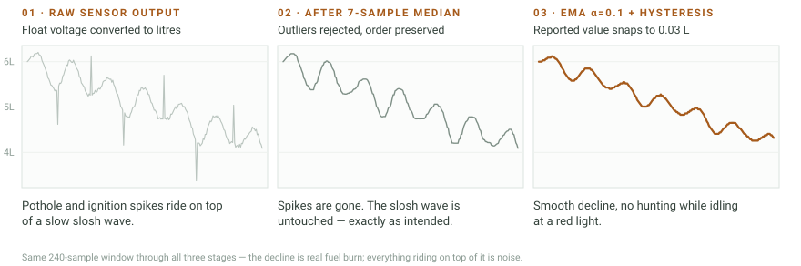

Background
Millions of daily commuters in Indonesia rely on carbureted motorcycles. Unlike modern electronic fuel injection (EFI) engines equipped with Engine Control Units (ECUs) and manifold pressure sensors, older motorcycles rely on a mechanical potentiometer connected to a copper float arm inside the petrol tank.
This setup has two notorious flaws:
- Analog Imprecision: The dashboard gauge only indicates fuel level with a coarse bimetallic needle or segmented LED bar, offering no quantitative volume in liters.
- Fluid Dynamics & Sloshing: Every throttle twist, brake press, speed bump, and lean angle violently tosses fuel inside the tank. The float arm bobs erratically, and ignition vibration injects high-frequency electrical noise directly into the analog signal line.
When I set out to build my undergraduate Capstone project at Universitas Komputer Indonesia (UNIKOM), my goal was clear: Can an affordable IoT system sit on a motorcycle, filter out mechanical and electrical disturbances, calculate real-time fuel efficiency (km/L), and publish authenticated telemetry securely to the cloud?
My Role
- Hilmy Abdurrahman Darmawan — Full-Stack Hardware & Software Engineer (Solo Capstone Project)
- Affiliation: Universitas Komputer Indonesia (UNIKOM), Program Studi Teknik Informatika (2025 – 2026)
I engineered the entire pipeline from scratch: schematic design, voltage divider calibration, custom C++ firmware on PlatformIO, multi-stage signal processing algorithms, TLS cryptographic keys, Django backend architecture, and PostgreSQL time-series modeling.
Hardware Architecture & High-Resolution Sensing
The standard ESP32 integrated ADC is notoriously non-linear and suffers from significant internal electrical noise, especially when Wi-Fi and Bluetooth radios are transmitting. Relying on the ESP32's internal 12-bit ADC for a fluctuating 0–5V float arm sensor would yield unpredictable readings.
To overcome this, I designed a dedicated signal acquisition frontend:

- External 16-bit ADC (ADS1115): Communicates with the ESP32 over I²C. Configured with a programmable gain amplifier (PGA) to map the conditioned float voltage across 65,536 quantization steps, guaranteeing microvolt-level resolution.
- NEO-6M GPS Module: Interfaced over hardware UART. Calculates real-time motorcycle velocity and computes accumulated geodesic distance using the Haversine Formula between successive GPS coordinate fixes.
- Power Conditioning: Step-down DC-DC buck converter stepping motorcycle battery voltage (12.6V–14.4V charging state) down to a stable 5V rail with reverse polarity protection and filtering capacitors.
The 3-Tier Digital Filtering Algorithm
Raw float sensor data resembles chaotic waves. To extract the true liquid fuel volume without causing unacceptable lag, I formulated a sequential 3-tier software filter executing directly on the ESP32:

1. Median Filter (7-Sample Window)
Mechanical shock from potholes and ignition pulses produce high-amplitude, single-sample outlier spikes. A standard moving average would smear these spikes into the data. A 7-sample moving median filter effectively strips extreme statistical outliers while preserving true level transitions:
// Sort the window and select the middle value
float median = sampleWindow[WINDOW_SIZE / 2];2. Exponential Moving Average (EMA, α = 0.1)
After impulsive spikes are removed, fluid sloshing produces periodic oscillatory waves as fuel sloshes back and forth inside the baffled tank. I implemented an EMA filter with a smoothing factor of α = 0.1:
filteredFuel = (α * currentSample) + ((1.0f - α) * previousFilteredFuel);This provides heavy attenuation against sloshing waves while responding steadily when fuel is genuinely consumed over distance or rapidly added at a petrol station.
3. Hysteresis Band (Δ = 0.03 L)
To avoid "hunting" and phantom telemetry updates while idling at traffic lights, a deadband threshold of 0.03 Liters was enforced. Minor noise below this delta is suppressed from mutating the reported volume.
Secure Telemetry & Cloud Analytics
Telemetry packets are formatted as JSON payloads containing timestamp, latitude, longitude, speed, raw ADC voltage, filtered fuel level (L), trip distance (km), and real-time efficiency (km/L).
- MQTT TLS (Port 8883): Security is paramount on connected vehicles. Telemetry packets are encrypted using TLS with X.509 certificate validation to ensure packets cannot be sniffed or spoofed over cellular networks.
- Django & PostgreSQL Backend: A Python Django server acts as the central ingestion broker, storing historical time-series logs in PostgreSQL and rendering interactive journey metrics, fuel consumption charts, and refuel detection logs.
Results & Impact
The system was installed and road-tested across Bandung in dense traffic and highway conditions:
- Zero Slosh Spikes: The 3-tier filter completely eliminated false drops during hard braking and acceleration.
- Instant Refuel Detection: When the fuel cap was opened and petrol added, the filter recognized the rapid monotonic rise within 3 seconds and logged a verified refuel event.
- Actionable Metrics: Successfully provided accurate km/L metrics, enabling the rider to observe immediate correlations between throttle aggressiveness and fuel expenditure.